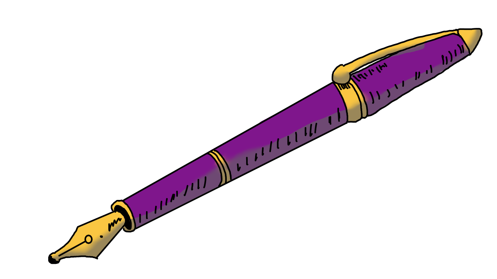

Welcome
Hi, my name is Charlette Salloue. I am 19 years old and I feel like a living contradiction. My natural personality is very upbeat and positive, but for some reason I also have a very cynical side. This side of me is negative, so it has always been somewhat confusing to me as I normally am quite positive. In order to deal with this, I have named my cynical side Alijah who I like to think of as a 38-year-old very grumpy English man. I am an aspiring writer and often I channel into Alijah when writing and often end up creating two stories with very different perspectives. I hope you enjoy my stories as much as I enjoy sharing them.

Check out my latest Character Post: Latest Post!!
Check out my latest Theory Post: Blog 13